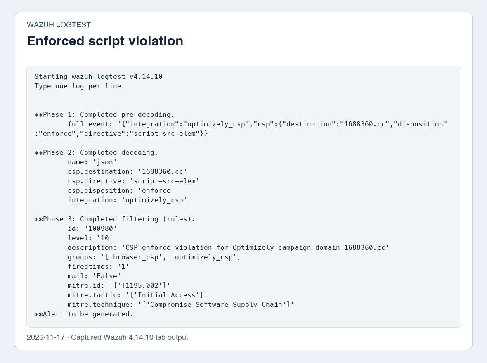
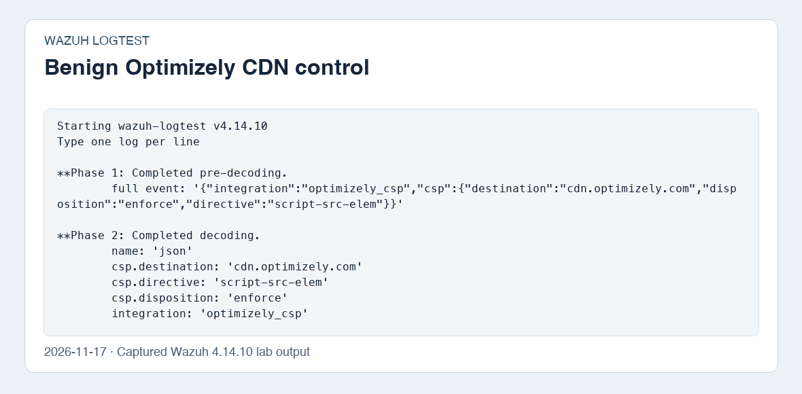
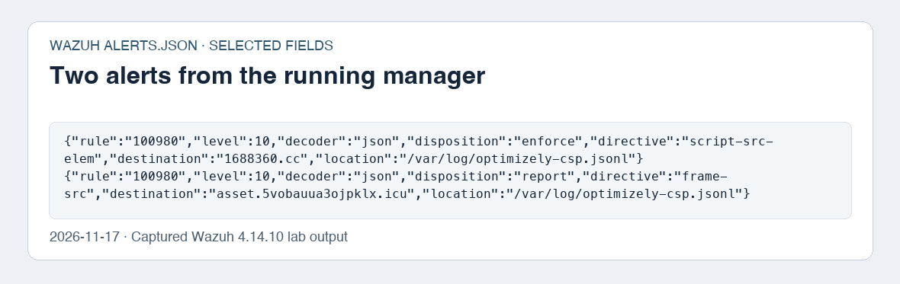

Hunting the Optimizely JavaScript supply-chain attack with Wazuh
Replay browser CSP reports on Wazuh 4.14.10, verify live alerts, and hunt for campaign traffic.
On 16 November 2026, visitors to websites using Optimizely Web Experimentation received malicious JavaScript through otherwise legitimate Optimizely snippets. Report URI documented cryptocurrency address replacement, payment-card skimming, cookie theft, and attempts to deliver iOS exploit kits. Optimizely subsequently reported fixing the vulnerability and removing the injected code from affected projects. Report URI investigation · Optimizely incident status
The investigation raises a question for Wazuh operators. What evidence is available when the compromised code runs in a visitor’s browser and arrives from a domain the site already trusts? One source is the browser’s Content Security Policy (CSP) violation report. This write-up shows how to turn those reports into a campaign-specific Wazuh alert and use it to guide a hunt.
What to contain first
If you operate a site that uses Optimizely Web Experimentation, identify which pages loaded an affected project and temporarily disable the snippet on exposed sensitive pages until you can verify a clean copy. Review Project JavaScript, experiment code, access history, and cached or self-hosted copies. Preserve the evidence you have before purging caches. If you identify potentially exposed authentication or payment pages, scope the affected sessions and transactions with your incident response and payment teams. Report URI response guidance
On sites you control, enforce a CSP with narrow script-src, connect-src, and frame-src policies appropriate to your application. Test the policy against legitimate dependencies, review how 'strict-dynamic' extends trust to scripts loaded by a trusted snippet, and remove 'unsafe-eval' where possible. Blocking the campaign’s published domains and subdomains at managed DNS or a secure web gateway can stop those destinations from being reached on managed networks. In-page actions, such as changing a displayed wallet address, can still occur without an outbound connection. Optimizely developer community analysis · Published indicators
Bring browser reports into Wazuh
A CSP violation report describes what the browser saw. Its disposition tells you whether the applicable policy enforced the restriction or only reported it.
| Disposition | How to read it |
|---|---|
enforce |
The browser reported blocking the specific action covered by the violation. Investigate what else ran or was allowed. |
report |
A report-only policy observed a violation. The report-only policy did not block the action. Look for independent evidence of an allowed request or exposure. |
The companion ruleset accepts two common formats through its jq normalizer. Legacy CSP reports arrive as a csp-report object. Reporting API requests can contain an array of reports. The normalizer extracts the destination hostname, disposition, and effective directive, then emits one JSON object per qualifying report. It omits the page URL and the rest of the raw report. CSP specification
Rule 100980 uses Wazuh’s built-in JSON decoder and alerts at level 10 when the hostname is one of the 12 published campaign domains or a subdomain of one. The rule compares DNS labels so an unrelated hostname that merely contains a campaign string stays silent. A request to the ordinary Optimizely CDN also stays outside this rule’s campaign match.
Set up the collection path
-
Configure your site to send CSP reports to a collector you control. Use the collector’s export or transformation pipeline to pass the JSON request bodies to the included
normalize-csp.jqfile. For a one-off export, for example:jq -c -f normalize-csp.jq exported-csp-bodies.jsonl >> /var/log/optimizely-csp.jsonl -
Add a JSON
localfileinput for/var/log/optimizely-csp.jsonlon the Wazuh agent or manager reading the log. Restrict access to the log and raw collector records. A public reporting endpoint can receive forged reports, so use independent evidence before treating an alert as confirmed activity. -
Check that rule ID
100980is available and installoptimizely_csp_rules.xmlin the manager’s/var/ossec/etc/rules/directory. Follow the companion README to validate the configuration, run fixture replay, and restart the relevant services. Search forrule.id:100980in Threat Hunting. Wazuh custom rules · Wazuh localfile reference
Replay a safe test before relying on alerts
From the companion integration directory, run the fixture suite on a test manager after installing the XML rule.
sudo python3 tests/check.py --logtest /var/ossec/bin/wazuh-logtest
The fixtures contain synthetic reports and make no network requests. The expected result is rule 100980 at level 10 for both an enforced script violation and a report-only frame violation. The suite also checks the ordinary CDN, hostname look-alikes, a campaign domain in a URL path, and inputs the normalizer should discard.
All nine fixture checks passed with the official Wazuh 4.14.10 manager image in a disposable Codespace. The image reported revision rc2. Six fixtures reached the Wazuh JSON decoder. Two matched the campaign rule and four served as negative controls. The normalizer discarded three inputs. Wazuh logtest reference


I also replayed the fixture export into the manager’s monitored JSON file. The running manager wrote exactly two campaign alerts to alerts.json. The first retained the enforced script violation. The second retained the report-only frame violation. This tested the pipeline from a collector-style export through Wazuh log collection and alerting. Browser delivery to a production reporting endpoint is outside the lab.

Run bash tests/run-lab.sh from the companion integration directory to repeat the manager and file ingestion checks with Docker.
Investigate the alert and its blind spots
Start with the hostname, directive, and disposition. A script-src-elem violation involving a campaign domain can indicate an attempt to load a script. A connect-src violation can indicate that browser code attempted to reach that destination. Check the collector for the affected page and event time, then correlate with DNS, proxy, and script-change telemetry. A DNS lookup alone shows interest in a destination. Proxy evidence of an allowed connection strengthens the case for follow-up, while proving data exposure requires additional evidence.
For this incident, start the Optimizely-specific hunt with 04:21–23:11 UTC on 16 November 2026, the first observed Optimizely injection through the last observed cleanup in Report URI’s timeline. Widen the window if your telemetry suggests earlier activity or later delivery from a cache. Look for the published destinations in historical logs even if domains no longer resolve. Report URI timeline and updates
This rule needs a collected CSP report that names a campaign destination. Browsers can execute code under a permissive policy without generating that report. Inline or eval violations also lack the destination hostname this rule needs. Use archived script copies and DNS or proxy telemetry to cover those gaps, and verify changes to third-party scripts independently of whether the browser raised an alert.
The companion package contains the rule, normalizer, sample reports, lab script, recorded manager output, and deployment README. If you test it, share the Wazuh version, collector format, and any unexpected results. Keep visitor and payment data out of shared examples. Integration and lab files